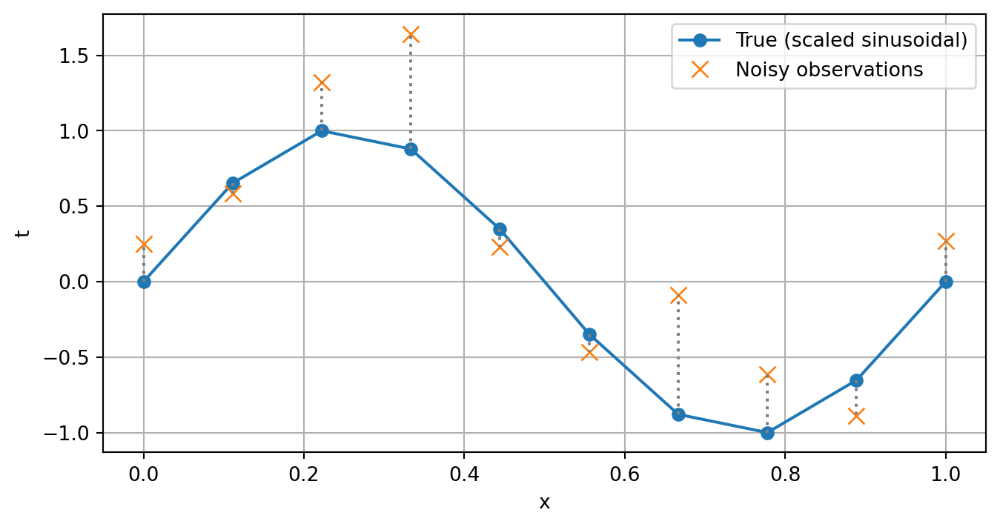

import numpy as np
import matplotlib.pyplot as pltIntroduction to Linear Models
Overview
Nonlinear models are essential for capturing complex relationships in data where the effect of predictors on outcomes does not follow a straight line. This document introduces nonlinear modeling through an illustrative simulation based on a sinusoidal relationship, inspired by examples in Bishop (2006).
Import Libraries
First, we load essential Python libraries for numerical computation and visualization:
Setting the Random Seed
To ensure reproducibility of our simulations, we set a random seed:
np.random.seed(42)Simulating the Data
We simulate paired data points, with x ranging between 0 and 1. Our target variable t follows a sinusoidal relationship:
\[ t = \sin(2\pi x) \]
We’ll scale t to explicitly range from -1 to 1 to demonstrate nonlinear relationships clearly:
n = 10
x = np.linspace(0, 1, n)
t_true = np.sin(2 * np.pi * x)
# Scaling t between -1 and 1
t = np.interp(t_true, (t_true.min(), t_true.max()), (-1, 1))Adding Noise to the Observations
Real-world data typically include noise. We simulate noisy observations by adding Gaussian noise to our target variable:
noise_sigma = 0.5
t_noisy = t + np.random.normal(0, noise_sigma, size=t.shape)Understanding the Sinusoidal Relationship
A common nonlinear relationship is sinusoidal, characterized by oscillatory behavior. Such relationships frequently appear in various fields such as physics, biology, and engineering.
Visualizing the Data
We plot our original scaled sinusoidal data and the noisy observations to visualize the sinusoidal relationship clearly:
plt.figure(figsize=(8, 4))
plt.plot(x, t, label="True (scaled sinusoidal)", marker="o")
plt.plot(
x, t_noisy, label="Noisy observations", marker="x", linestyle="none", markersize=8
)
# Add dotted lines connecting true and noisy observations
for xi, ti, tni in zip(x, t, t_noisy):
plt.plot([xi, xi], [ti, tni], linestyle=":", color="gray")
plt.xlabel("x")
plt.ylabel("t")
plt.legend()
plt.grid(True)
plt.show()

Error Function
\[ E(\textbf{w}) = \frac{1}{2}\sum_{n=1}^{N} \{y(x_n \textbf{w}) - t_n\}^2 \]
error = np.sum((x - t)**2)
error2 = (1/2)*np.sum((x - t)**2)Conclusion
Through this simple simulation, we’ve demonstrated a key nonlinear relationship: the sinusoidal pattern. Nonlinear modeling allows capturing richer dynamics in data, especially when linear assumptions fail to provide adequate representations.
\[ ln \lambda \]